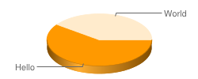
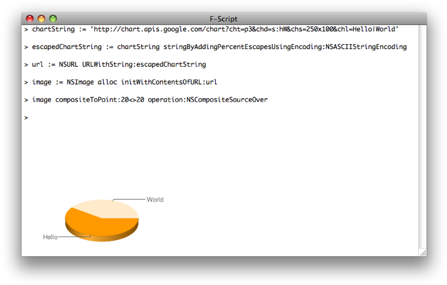

Revised August 2009
The Web is abuzz with a new Google service: a Web API for creating charts.
The Google Chart API returns a PNG-format image in response to a URL. Several types of image can be generated: line, bar, and pie charts for example. For each image type you can specify attributes such as size, colors, and labels.
Accessing it with F-Script is easy, as we will interactively experiment. In the process we will learn how to call the Google Chart API from Cocoa, how to pass data stored in Cocoa arrays, how to apply special effects using Core Image, and a few other cool things...
First, let's start with a very simple example, the "Hello World" chart, which is described in the Google Chart API documentation:
To see the Chart API in action, open up a browser window and copy the following URL into it:
http://chart.apis.google.com/chart?cht=p3&chd=s:hW&chs=250x100&chl=Hello|World
Press the Enter or Return key and - presto! - you should see the following image:
The URL contains all the data needed to describe the chart. We'll
examine that further, but, for now, let's see how we can generate an NSImage for this chart in Cocoa, using F-Script.
Cocoa provides us with the NSURL class to manipulate URLs. We'll use it to retrieve our chart from the Google Chart API and generates an NSImage object. We start by defining an NSString that contains our URL:
chartString := 'http://chart.apis.google.com/chart?cht=p3&chd=s:hW&chs=250x100&chl=Hello|World'.
There is a little caveat: for creating our NSURL object, we need to provide the NSURL class with a percent-escaped URL string. Such a string is easy to generate using the stringByAddingPercentEscapesUsingEncoding: method:
escapedChartString := chartString stringByAddingPercentEscapesUsingEncoding:NSASCIIStringEncoding.
All we have to do now is to instantiate an NSURL object and to create our NSImage using the initWithContentsOfURL: method:
url := NSURL URLWithString:escapedChartString.
image := NSImage alloc initWithContentsOfURL:url.
That's it. The initWithContentsOfURL: method takes care of issuing the HTTP request and to initialize our newly allocated NSImage instance with the result. To look at our image, we can send it the inspect message. It opens an inspector that displays the image in a window:
image inspectOr we can directly use a Cocoa drawing method. For example:
image compositeToPoint:20<>20 operation:NSCompositeSourceOverOf course, we can directly copy and paste all the code shown here in the F-Script shell, in order to interactively experiment with it. Here is what our F-Script session may look like:
As with any Cocoa object, we can further explore our NSImage object with the object browser:
sys browse:imageGenerating the "Hello World" pie chart is fun (that's how you know you are a geek) but this would be better with actual meaningful values. For instance, let's try to generate a pie chart that shows the proportion of free and used space of our startup disk. The first step is to get at those values. To do that we can use the Mac OS X Scripting Bridge, which allows manipulating other applications as if they were Cocoa objects (see System-wide Scripting with F-Script for more on this topic).
Finder := SBApplication applicationWithBundleIdentifier:'com.apple.finder'.
capacity := Finder startupDisk capacity.
freeSpace := Finder startupDisk freeSpace.
Now we need to compute the proportions of free space and used space:
percentFree := freeSpace * 100 / capacity.
percentUsed := 100 - percentFree.
We can then call the Google Chart API. As you can see below, we
construct the URL using F-Script's string concatenation operator (i.e., ++) to specify values in the URL. As described in the Google Chart API documentation, the data points must be provided with the chd parameter. Also, we are using the chco parameter to specify other colors for the chart, and the chf to specify a background color. We have also modified the chs parameter to make the chart bigger, and added a title using the chtt parameter.
chartString := 'http://chart.apis.google.com/chart?cht=p3&chs=400x200&chco=00AA00&chf=bg,s,F5F5F5&chl=free|used&chtt=Startup disk space&chd=t:'
++ percentFree printString ++ ',' ++ percentUsed printString.
escapedChartString := chartString stringByAddingPercentEscapesUsingEncoding:NSASCIIStringEncoding.
url := NSURL URLWithString:escapedChartString.
image := NSImage alloc initWithContentsOfURL:url.
image inspect.
In our code, the cht parameter is used to specify the chart type. By changing its value from p3 to p, we can get a 2D pie chart:
Our chart is nice but what about making it shiner with some special
effect? To do that, we are going to use the Core Image framework provide
by Mac OS X. Core Image provides a powerful model for image processing
and comes with dozens of built-in effects, in the form of CIFilter objects. To make use of Core Image, we must first create a CIImage object from our chart. CIImage provides various creation methods, including imageWithContentsOfURL: which is well suited in our case (for more on using Core Image filters with F-Script, you can read Learn F-Script in 20 Minutes and Have Fun Playing with Core Image).
ciimage := CIImage imageWithContentsOfURL:url.Then we create two Core Image filters. The first one, a CIStarShineGenerator, is used to generate a "star shine" image that we compose over our chart image using the second one, a CISourceOverCompositing.
starShineGenerator := CIFilter filterWithName:'CIStarShineGenerator'.
starShineGenerator setDefaults.
starShineGenerator setValue:4 forKey:'inputRadius'.
starShineGenerator setValue:(CIVector vectorWithX:167 Y:24) forKey:'inputCenter'.
starShineImage := starShineGenerator valueForKey:'outputImage'.
sourceOverCompositing := CIFilter filterWithName:'CISourceOverCompositing'.
sourceOverCompositing setValue:starShineImage forKey:'inputImage'.
sourceOverCompositing setValue:ciimage forKey:'inputBackgroundImage'.
finalImage := sourceOverCompositing valueForKey:'outputImage'.
We can then look at the result by drawing finalImage (F-Script does not yet provide an inspect method for CIImage objects):
finalImage drawAtPoint:150<>150 fromRect:ciimage extent operation:NSCompositeSourceOver fraction:1.
We often want to chart tabular data. For instance, supose that, using F-Script, you recently created an awesome application and now want to look at the evolution of your sales over the last few months.
We will first create NSArray objects that contain our sales data. This will serve to illustrate a common need: charting data stored in arrays.
months := {'May', 'June', 'July', 'August', 'September', 'October', 'November'}.
sales := {2400, 6800, 6205, 9365, 15000, 24206, 41034}.
As you can see, there were 2400 licenses sold in May, 6800 in June and so on...
The Google Chart API expects data points to be expressed on a scale
that goes from 0 to 100. Therefore, we are going to scale the data from
our sales array (our month array is only used
to provide labels on the x axis). To do that, we first find the biggest
number in our array (it will also be used to specify the range
associated to the y axis), using an operation called reduction that is
carried on by the \ method. This method takes one argument,
a block, and cumulatively evaluates it on the elements of the receiver.
You can learn more about reduction and other array programming
operations in the F-Script Guide (pdf file).
salesMax := sales \ #max:.
Then we project our data set on a scale from 0 to 100:
salesScaled := sales * 100 / salesMax.
We can now prepare the strings that we will put in our Google Chart URL. Data points must be separated by comas, and labels must be separated by pipes:
salesString := salesScaled componentsJoinedByString:','.
monthsString := months componentsJoinedByString:'|'.
componentsJoinedByString: is a standard Cocoa method
provided by NSArray which constructs and returns an NSString object that
is the result of interposing a given separator between the elements of
the receiver’s array. Alternatively, we could have used reduction to
construct our strings:
salesString := salesScaled \ [:a :b| a description ++ ',' ++ b description].
monthsString := months \ [:a :b| a ++ '|' ++ b].
Finally, we can construct our ULR, call the Chart API and inspect the resulting image:
chartString := 'http://chart.apis.google.com/chart?cht=bvs&chs=470x320&chf=bg,s,F0F0F0&chtt=Sales&chbh=30,30&chg=0,25,1,0&chco=4E6B9A&chxt=x,y&chxl=0:|'
++ monthsString ++ '&chxr=1,0,' ++ salesMax description ++'&chd=t:' ++ salesString.
escapedChartString := chartString stringByAddingPercentEscapesUsingEncoding:NSASCIIStringEncoding.
image := NSImage alloc initWithContentsOfURL:(NSURL URLWithString:escapedChartString).
image inspect.
Modifying the various parameters in the URL (which are all documented by Google in the developer's guide), we change the appearance of the chart. For example, setting the cht (chart type) parameter to lc produces a line chart:
Finally, saving the image on disk is easy using standard Cocoa methods. For instance the following code saves our image in our Desktop folder using the TIFF format:
image TIFFRepresentation writeToFile:'~/Desktop/sales.tiff' stringByExpandingTildeInPath atomically:YES
Happy charting!
Copyright © 2009 Philippe Mougin